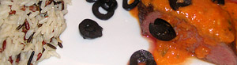

Lammrücken mit Tomatenbutter
5 von 6lammfilets sehr heiss anbraten und bei ca. 70 grad etwa 45 min. im ofen niedergaren.
600gr geschälte und entkernte tomaten in würfel schneiden. schalotten und knoblauch in butter andünsten. die tomaten mit etwas püree dazu und mit 0,5dl weisswein ablöschen. kochen lassen. sauce mit stabmixer fein pürieren. 2 esslöffel doppelrahm und 100gr butter untermischen. mit salz, pfeffer und reichlich frischem estragon würzen.
